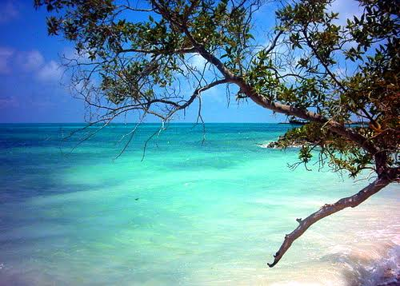
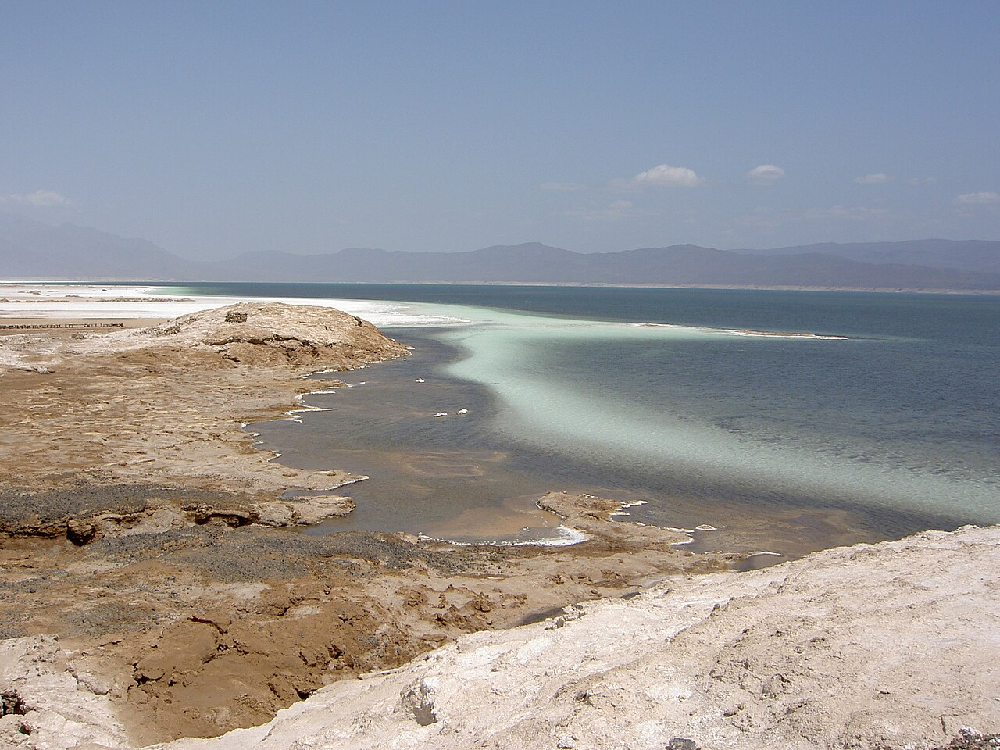
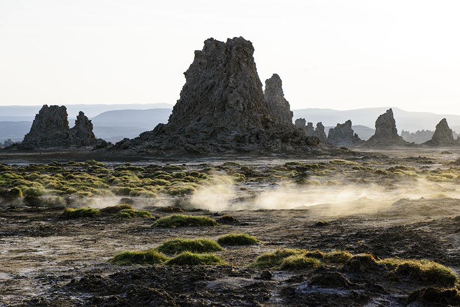
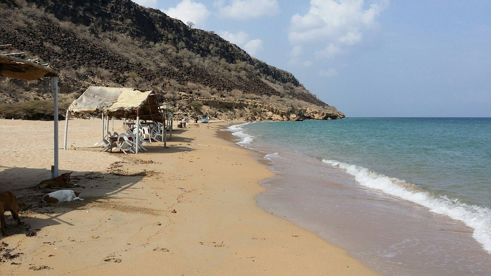

WELCOME TO THE REPUBLIC OF DJIBOUTI

WELCOME TO THE REPUBLIC OF DJIBOUTI
Unité - Egalité - Paix
Explore Djibouti's Wonders
Scroll to discover even more
Most Popular Destinations

The Moucha Island
Ile Moucha is a quiet coral island sitting in the blue water of the Gulf of Tadjourah. It is an easy boat trip from the capital, and once you get there, the atmosphere completely changes. The shoreline is a mix of white sand and low-lying brush, surrounded by clear, warm water that makes it one of the best spots near the city for swimming and snorkeling. You can easily spend the day walking the beach, exploring the shallows, or just sitting out in the sun with a view of the open sea. It feels remote and uncrowded, giving you a proper escape without having to travel far from the mainland.

The Lake Assal
Situated at the western end of the Gulf of Tadjourah, Lake Assal is a stunning crater lake surrounded by dormant volcanoes and rugged, dramatic black lava fields. As the lowest point in Africa, it plunges 155 meters below sea level and features a thick, blinding crust of pure white salt that glimmers under the sun, creating one of the most otherworldly and photogenic landscapes on the entire continent. Visitors can walk across vast, sparkling expanses of crystalline salt formed by millennia of intense evaporation, witness the striking geological contrast where dark basalt hills meet brilliant white mineral shores, and catch glimpses of traditional camel caravans that have traversed these historic desert trade routes for centuries to transport blocks of white gold

Gulf of Tadjourah
The Gulf of Tadjourah forms a picturesque body of water indenting the coast, serving as the dramatic backdrop for Tadjoura, the ancient white-washed port town famously known as the "City of White Houses". The region exudes a relaxed, historic, and coastal atmosphere that is deeply enriched by a warm and friendly local culture. Beneath the surface and along the shoreline, the area is globally renowned for its exceptional marine life, making it a prime destination for scuba diving, snorkeling, and unforgettable seasonal whale shark sightings. Ashore, visitors can wander through traditional narrow streets, explore vibrant local markets, and admire old mosques that reflect the deep heritage of the town. This unique blend of maritime wonder and historical charm is further complemented by nearby idyllic coastal spots, most notably the pristine white sand beaches of Sables Blancs.

The Lake Abbé
Deep within the rugged and desolate landscapes of southwest Djibouti, near the border with Ethiopia, lies Lake Abbe, an utterly surreal and otherworldly destination that feels like stepping onto an entirely different planet. Serving as the terminal basin where the waters of the Awash River finally evaporate into the desert air, this mystical lake is globally famous for its forest of dramatic, towering limestone chimneys that shoot up as high as 50 meters into the sky. These towering natural spires, formed by ancient hydrothermal activity, continuously vent wisps of steam from deep underground geothermal channels, adding to the haunting and atmospheric aura of the basin. As day turns to night, the vast, cracked salt flats and volcanic terrain catch the shifting light, transforming into an explosion of brilliant pinks, deep oranges, and burning golds during sunrise and sunset. Beyond its striking geology, Lake Abbe is a vibrant hub for wildlife and human culture alike; enormous flocks of wild pink flamingos wade peacefully through the shallow, mineral-rich alkaline waters, while traditional Afar nomadic camps dot the surrounding desert flats. Experiencing this remote expanse offers travelers a rare glimpse into a raw, primeval environment where harsh wilderness meets timeless cultural heritage, creating an unforgettable highlight of East Africa.

The Beach of Khor Ambado
Tucked away along the dramatic coastal routes where the Gulf of Tadjourah meets the Red Sea, Khor Ambado is an exceptionally stunning and tranquil beach destination. Known locally as the "French Beach," this secluded haven is framed by dark volcanic cliffs and rugged rock formations that contrast sharply with a sweeping stretch of soft sand and brilliantly clear turquoise waters. Located just a short drive from the capital, it provides a deeply laid-back atmosphere where visitors can unwind and watch local fishing boats bobbing against the shore. The crystal-clear bay serves as a premier spot for aquatic adventures, featuring vibrant coral gardens just offshore where snorkelers can discover intricate coral reefs and colorful marine life. As day transitions into evening, the shoreline transforms under a magnificent sunset sky, making it an idyllic location to experience the raw, untouched beauty of Djibouti's coastline.
And much MUCH more to discover when you arrive
• ᴗ
<